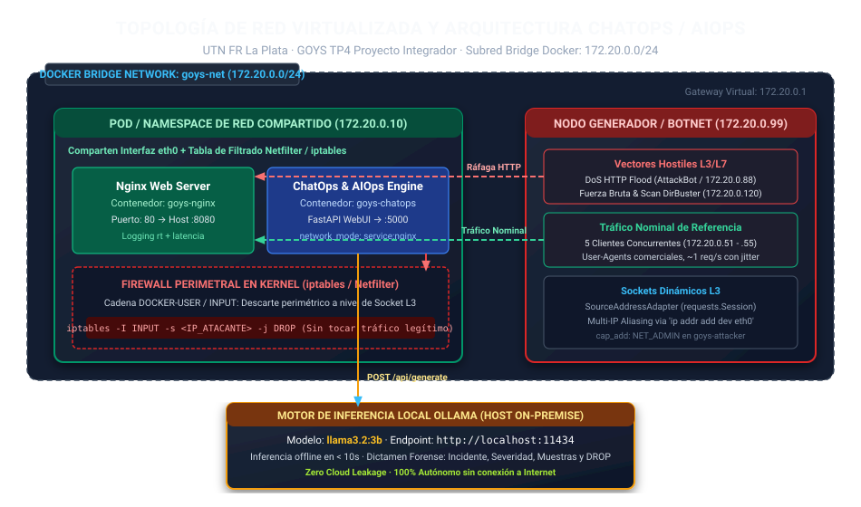

Contexto, Problema y Objetivo
El problema
Los logs crudos saturan al NOC/SOC y alargan el MTTR; Fail2ban no entiende el contexto y da falsos positivos.
Objetivo: ChatOps & AIOps
Plataforma en contenedores: un LLM local (Llama 3.2 3B) clasifica incidentes y mitiga desde el chat.
100% offline
On-premise, sin nube: privacidad total de IPs y logs, y demo robusta en la Feria.
Topología de Red Virtualizada
Docker Bridge 172.20.0.0/24, patrón Sidecar Network: ChatOps comparte la red y NET_ADMIN de Nginx e inyecta reglas en DOCKER-USER.

Metodología Two-Tier AIOps
Tier 1: Heurística < 1 ms
Ventana deslizante de 300 eventos: volumen por IP, frecuencias HTTP y concentración, sin saturar al LLM.
Tier 2: LLM (Ollama) ~3.8 s
Llama 3.2 3B con In-Context Learning y taxonomía CVSS: correlaciona User-Agents y rutas sensibles y fija el riesgo.
Human-in-the-Loop < 8 ms
La IA propone, el operador aprueba y el kernel aplica iptables DROP al instante.
Resultados de Laboratorio
AIOps Sentinel — Registro forense
SEVERIDAD CRÍTICA · RÁFAGA
Dictamen LLM (3810 ms): DoS L7 volumétrico sobre
/.
✔ DROP APLICADO
[Operador HITL]
iptables -I DOCKER-USER -s 172.20.0.99 -j DROP
- DoS contenido: 260 peticiones descartadas en el kernel; el atacante pasa a TIMEOUT.
- Tráfico legítimo intacto: 5 clientes con 200 OK y latencia < 2 ms.
- Sin auto-DoS: lista blanca de gateway y servidor Nginx.
Conclusiones
- Logros: LLM local: clasifica en ~3.8 s y bloquea en < 8 ms, sin salir de la red.
- Limitaciones: prototipo en un único host (Docker Compose); bloqueo con aprobación humana.
- Trabajo futuro: streaming masivo, vLLM/Triton y mitigación distribuida (eBPF, WAF, BGP Flowspec).
Referencias
- Touvron, H. et al. (2023). Llama: Open and Efficient Foundation Language Models. Meta AI.
- Netfilter Project (2024). iptables. Documentación oficial.
- FIRST (2023). CVSS v3.1 & v4.0. Especificación.